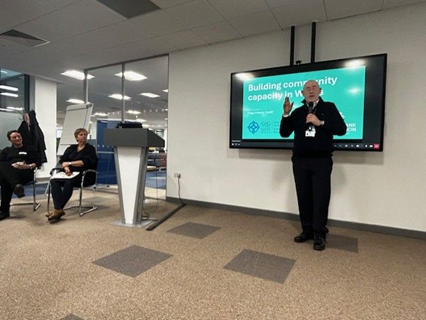
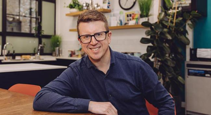

Building community capacity in Wales
Update for Participants Following the March 2026 Workshop • July 2026
Dear Colleagues,
Thank you for participating in the Building community capacity in Wales workshop hosted by Public Health Wales (PHW) and Lloyds Bank Foundation for England and Wales (LBF) in March 2026. The energy, insight, and commitment in the room demonstrated the strength of the coalition that exists across Wales to support stronger, healthier, and more empowered communities.
Since the workshop, Public Health Wales, Lloyds Bank Foundation, WCVA, and Welsh Government have each taken important steps to strengthen partnerships, develop policy, secure investment, and align priorities around prevention, health equity, and community-led change. We have been laying the groundwork for our work on long-term action on community capacity in Wales.
New partnerships are in place, opportunities for investment are emerging, and there is growing alignment around a shared ambition to strengthen community leadership, resilience, and wellbeing across Wales.
The next phase is to build on this momentum. We want to continue the conversations that began in March, deepen collaboration with those who expressed an interest in this agenda, and work together to develop practical place-based activity that delivers lasting benefits for communities across Wales.
Summary of progress
Since the March 2026 workshop:
- Lloyds Bank Foundation has launched a new strategy with a strengthened commitment to Wales and is testing a community-led systems change model.
- Public Health Wales has embedded community capacity more firmly within its prevention and health equity agenda, secured an £8 million all-Wales obesity innovation investment that creates opportunities to strengthen community support and participation, and established a strategic partnership with WCVA.
- Welsh Government has advanced work on community empowerment, co-production, and cross-sector alignment with the Wellbeing of Future Generations (Wales) Act.
"Together, these developments have created stronger alignment between community development, prevention and health equity than existed six months ago."
What We Will Do Next
Our immediate priority is to continue the conversations started in March and work with those who expressed interest in taking this agenda forward. Over the coming months we will:
- Deepen place-based collaborations and pilot initiatives across local health boards and voluntary councils.
- Share evaluation frameworks and practical toolkits for community capacity measurement.
- Convene follow-up regional partner roundtables to translate shared ambition into funded delivery.

Matt Hyde
Lloyds Bank Foundation
Friday Reflections on... Words into Actions
"I'm returning from Cardiff after an uplifting 'Building community capacity in Wales' workshop which Lloyds Bank Foundation for England and Wales hosted alongside Public Health Wales. The origin of today was a conversation I had with Wales Director for Health & Wellbeing at a University dinner a year ago. We shared a passion for neighbourhood health that could only be achieved if funding flowed directly into communities."
"Converting words into action was the theme... What matters most is the actions that follow the words — is more philanthropy unlocked, is there greater social investment, and is a better use of capital leading to better social outcomes? That is the prize."